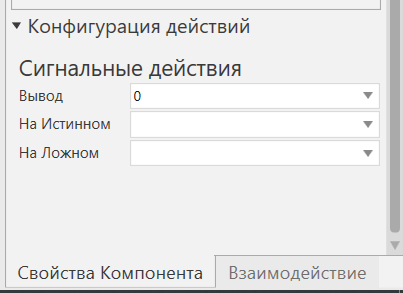

Сопоставление сигналов с действиями в роботе |
|
Ввод-вывод робота можно сопоставить с базой и инструментальной рамкой для выполнения действий, специфичных для инструмента. Например, вы можете использовать оператор Set Binary Output, чтобы сигнализировать о захвате и освобождении, трассировке, а также о монтаже и демонтаже компонентов инструмента. Обратите внимание, что во всех случаях цифровые (логические) сигналы используются для обозначения действий со значением True или False. 1.В трехмерном мире выберите робота в качестве компонента. 2.На панели Свойства, разверните раздел Конфигурация действий.  3.Под Сигнальные действия, выполните все следующие действия: ·В Выводе, щелкните сигнал робота, который вы хотите использовать для подачи сигнала. Большинство компонентов робота имеют Сценарий действия поведения, при котором сигналы с 1 по 48 автоматически сопоставляются с рамкой инструментов, а сигналы с 49 по 80 — с базовыми рамками. Это означает, что существуют предопределенные действия сигналов, которые вы можете использовать без необходимости настраивать новые. В большинстве случаев сигналы с 1 по 16 сигнализируют действия схватить и отпустить, сигналы от 17 до 32 действия трассировки и сигналы с 33 по 48 действия монтажа и демонтажа инструмента. Как правило, вам не нужно использовать базовые рамки, поэтому использование сигнала 50 и выше не вызовет проблем. В противном случае вы можете использовать сигнал 100 и далее, что в любом случае упрощает поиск и ссылку на то, какие сигналы используются для действий. ·На Истинном, щелкните действие, которое вы хотите выполнить, когда значение сигнала равно True. Это отобразит раздел параметров для выбранного действия. ·На Ложном, щелкните действие, которое вы хотите выполнить, когда значение сигнала равно False. Это отобразит раздел параметров для выбранного действия. 4.Выполните любое из следующих действий, которые относятся к действию На Истинном, выбранному на шаге 3. ·Если действие выбрано как Схватить, определите рамку инструмента и область обнаружения, которые будут использоваться для захвата компонентов. Область обнаружения - это объемная область, определенная с помощью координат XYZ в системе координат инструментальной рамки. Это позволяет роботу знать, какие компоненты можно и нельзя захватывать в трехмерном мире. ·Если действие выбрано как Трассировка включена, определите материал и инструмент, которые будут использоваться для отслеживания траектории движения робота. Затем определите, хотите ли вы присоединить наборы линий трассировки к 3D-миру (корневому узлу симуляции) или к узлу компонента. Как правило, наборы трассируемых линий привязываются к 3D-миру, поскольку робот может перемещаться во время симуляции, например, роботы, установленные на рельсах. ·Если действие выбрано как Закрепить инструмент, определите инструмент, область обнаружения и интерфейс, которые будут использоваться для закрепления компонентов инструмента. Обратите внимание, что используемый интерфейс должен быть совместим с интерфейсом в компоненте инструмента, иначе компонент инструмента не будет установлен на роботе. 5.Выполните любое из следующих действий, применимых к действию На Ложном, которое вы выбрали на шаге 3. ·Если действие Отпустить, установите свойство Дистанция присоединения как расстояние от нижней части захваченного компонента до контейнера, к которому компонент может быть прикреплен в 3D-мире. Если контейнер не найден, компонент освобождается и прикрепляется к 3D-миру (корневой узел симуляции). ·Если действие Трассировка выключена, определите, для какого инструмента должна быть отключена трассировка. ·Если действие Открепить инструмент, установите свойство Дистанция присоединения как расстояние от нижней части связанного блока компонента инструмента до контейнера, к которому компонент инструмента может быть прикреплен в 3D-мире. Если контейнер не найден, компонент освобождается и прикрепляется к 3D-миру (корневому узлу симуляции). Далее определите, от какого интерфейса в роботе отсоединен компонент инструмента. Если компонент инструмента заблокирован от редактирования, вы не сможете отсоединить инструмент от робота. 6.В программе робота добавьте оператор Установить бинарный вывод, сигнализирующий о действии. Например, установите для сигнала 17 значение True, чтобы включить трассировку, а затем используйте другой оператор Установить бинарный вывод, чтобы отключить трассировку. Подсказка: Если вы хотите использовать импортированную инструментальную рамку, мы рекомендуем переместить одну из инструментальных рамок робота в местоположение импортированной инструментальной рамки. Это позволит вам избежать действий по перенастройке, а также случаев, когда импортированная инструментальная рамка недоступна в роботе. |